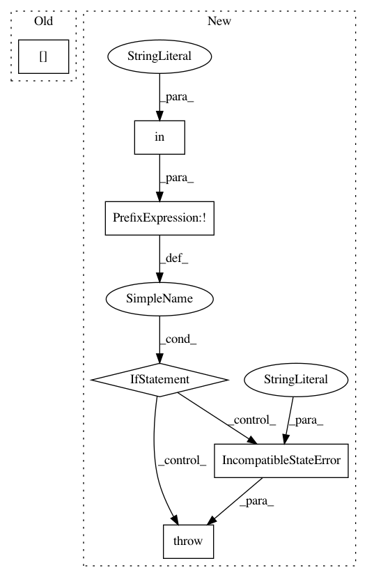

5ad1bd651f39457efcebe6be251204a4cc8f07e8,theanolm/network.py,Architecture,from_state,#Any#Any#,47
Before Change
classname._check_parameter_in_state("arch.hidden_layer_size", state)
classname._check_parameter_in_state("arch.skip_layer_size", state)
return classname(
state["arch.word_projection_dim"].item(),
state["arch.hidden_layer_type"].item(),
state["arch.hidden_layer_size"].item(),
state["arch.skip_layer_size"].item())
After Change
:param state: a dictionary of the architecture parameters
if not "arch.layers" in state:
raise IncompatibleStateError(
"Parameter "arch.layers" is missing from neural network state.")
// A workaround to be able to save arbitrary data in a .npz file.
dict_ndarray = state["arch.layers"][()]
layer_descriptions = dict_ndarray["data"]
return classname(layer_descriptions)
In pattern: SUPERPATTERN
Frequency: 3
Non-data size: 6
Instances
Project Name: senarvi/theanolm
Commit Name: 5ad1bd651f39457efcebe6be251204a4cc8f07e8
Time: 2015-11-28
Author: seppo.git@marjaniemi.com
File Name: theanolm/network.py
Class Name: Architecture
Method Name: from_state
Project Name: senarvi/theanolm
Commit Name: 0375cb0a69852f21f19c8568b4a37128d4407fc0
Time: 2016-04-12
Author: seppo.git@marjaniemi.com
File Name: theanolm/architecture.py
Class Name: Architecture
Method Name: check_state
Project Name: senarvi/theanolm
Commit Name: 0375cb0a69852f21f19c8568b4a37128d4407fc0
Time: 2016-04-12
Author: seppo.git@marjaniemi.com
File Name: theanolm/architecture.py
Class Name: Architecture
Method Name: from_state